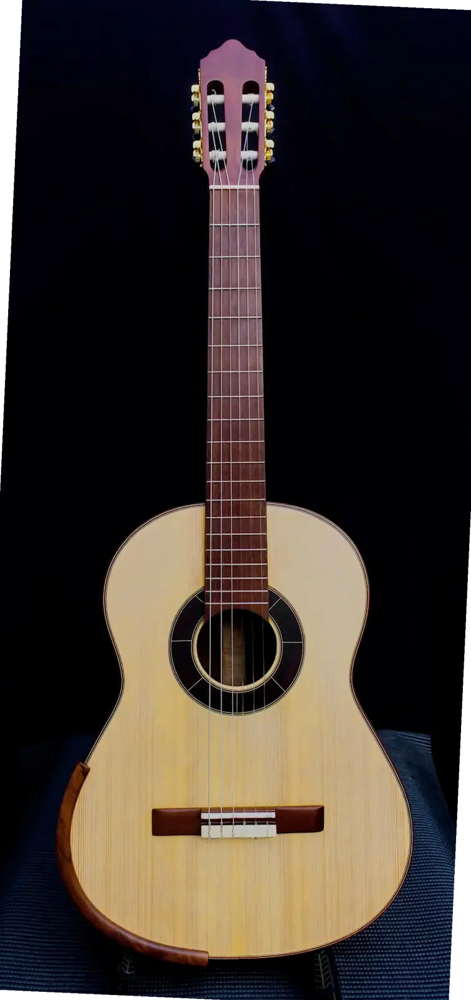

Jaci Violão Clássico

- Madeiras / materiais
- Fundo e Laterais: Imbuia - Tampo: Abeto - Braço: Mogno - Escala: Pau-ferro
- Identificação
- BL-25-VC-001
Violão Clássico Raiz - Jaci - em madeira maciça, construído com esmero e atenção aos detalhes, resultando em um instrumento de timbre expressivo e acabamento refinado.
- TAMPO: Abeto Alemão – leveza e melhor resposta sonora
- FUNDO e LATERAIS: Imbuia – tonalidade quente e visual que se destaca
- BRAÇO: Mogno – Leveza, conforto, confiabilidade e estabilidade na execução
- ACABAMENTOS: Filetes e entalhes em madeira marchetada, que enriquecem a estética do instrumento
- Luthier: Jacir Paulo Baratieri – dedicação e tradição na arte da luteria